A visão
Este guia é a fonte única de verdade da obra: das referências à execução. Quem entra no projeto lê isto primeiro.
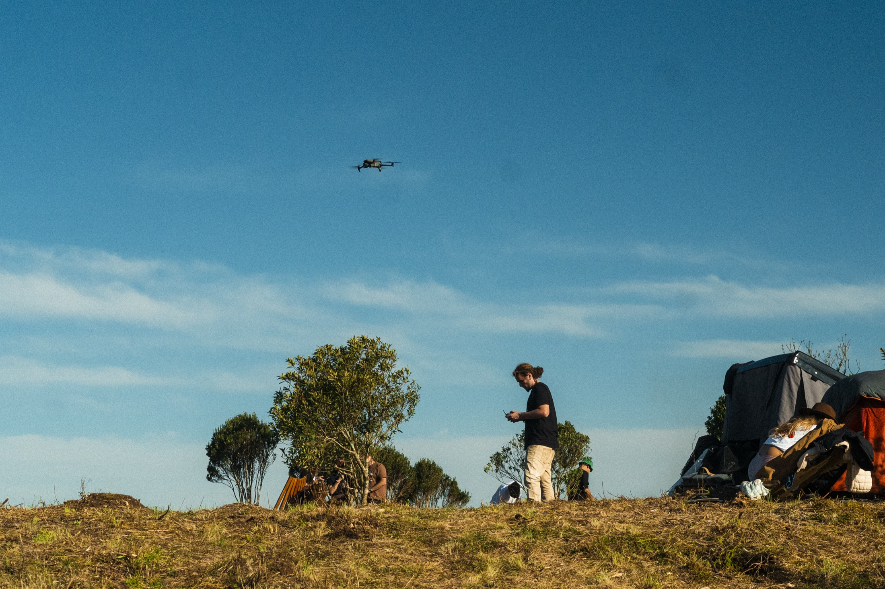
Um micro-refúgio de volume único, todo aberto, que vira as costas de pedra para o vento de serra e abre o peito de vidro para o abismo. O fogo no centro; a vista a leste; a rocha por baixo e por dentro. A ambição é honesta e alta: um case de construção ecoeficiente — autônomo, seguro e belo.
O que é
Um só ambiente
Cama king, fogão a lenha de massa, 2 poltronas para a vista, uma bancada mínima, um banheiro — a única caixa fechada. Nada mais.
Como se sustenta
Autonomia total
Água da chuva + nascente por gravidade. Energia solar. Calor da lenha do próprio lote. Sem depender de rede.
Por que é case
Rigor + lugar
Desempenho medido (não marketing), materiais do sítio, integração à paisagem, e a pedra ferro como identidade.
Números marcados ESTIMATIVA são ordem de grandeza; os de estrutura são pré-dimensionamento. O fechamento final exige topografia, ensaios e cálculo com ART — detalhado em Segurança.
O sítio
Um esporão de pedra ferro debruçado sobre o cânion da Serra Catarinense. Tudo no projeto responde a este lugar.
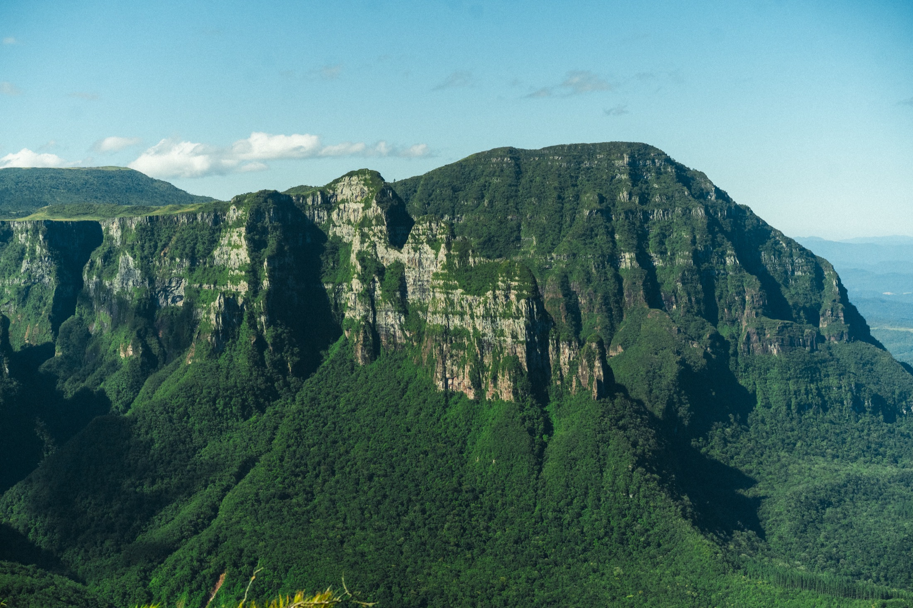
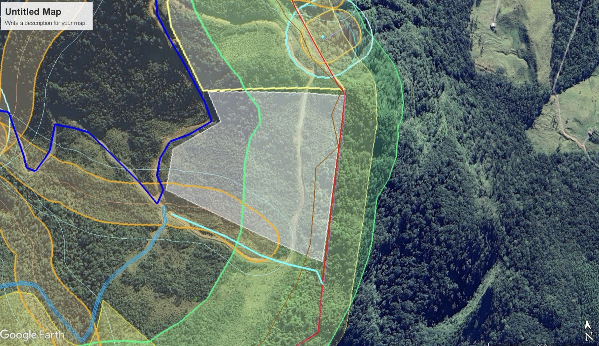
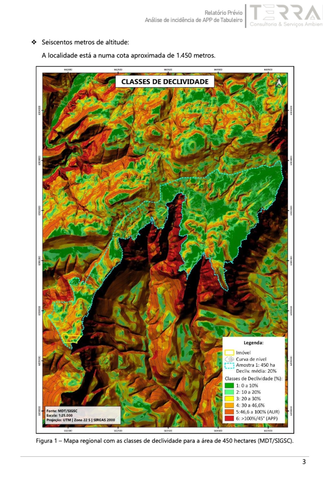
Geografia
- Promontório sobre cânion — a encosta despenca para L/SE; os paredões são a vista.
- Platô de pedra ferro com grama — fundação em rocha viva (zero recalque, sem gelo levantando).
- Escarpa = APP (não-construir) na queda; implantar recuado 15–30 m da borda.
- Estrada de terra já chega — o maior driver de custo resolvido.
Clima & vento
- ~1.450 m — geadas, neve ocasional, mínima regional −17,8 °C.
- Vento de serra: região provou 178,9 km/h. Frentes: NW antes, S/SW depois.
- Borda de cânion amplifica (updraft) — a lip é o ponto mais turbulento; recuar.
- Vista E/SE a sotavento dos ventos dominantes → favorável.
Bússola (vista × sol de inverno ao N), ponto mais abrigado do ombro, recuo seguro da lip, afloramento de pedra ferro sã, limite do lote, e existência/cota da nascente.
Partido & referências
A Casa do Penedo dá a alma (monolítico, ancorado na rocha); a engenharia nórdica dá a física (envelope quente e estanque).
A pedra ancora, abriga e emociona; um núcleo de madeira super-isolado vive atrás dela. A lição de ouro dos precedentes: massa por dentro, isolamento por fora — o erro dos primeiros Earthships foi confundir massa com isolamento.
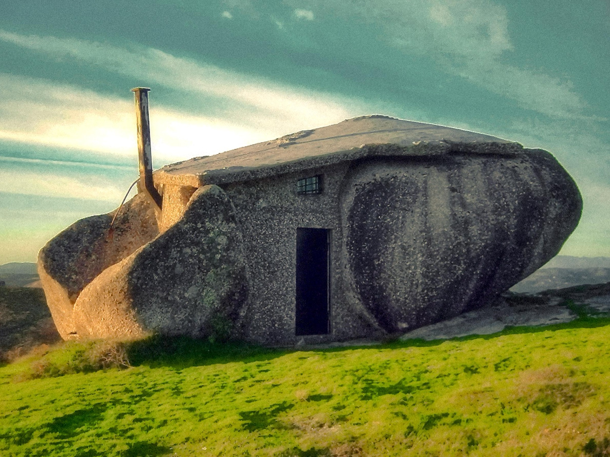
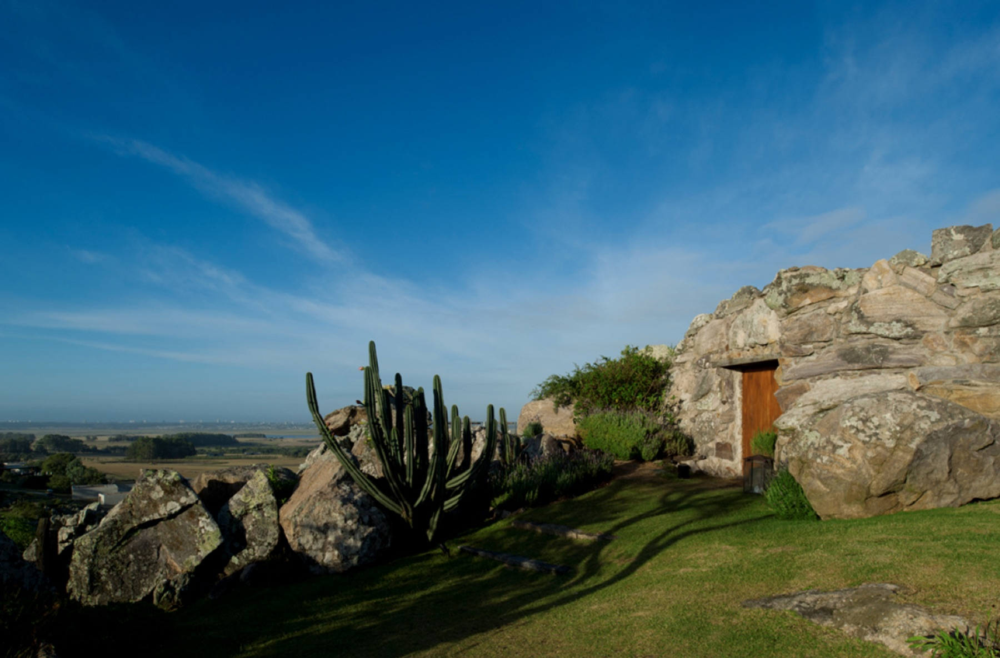
Forma
Rústico uruguaio
Face de pedra fechada ao clima, um único portal de madeira, massa baixa emergindo da rocha. O Penedo refinado e habitável.
Gêmeo do programa
ZeroCabin, Patagônia
~40 m², off-grid, mesmo clima e orçamento: solar no telhado, chuva → potável, lenha como fonte única.
Manual da autonomia
The Autonomous House
Vale (Inglaterra): chuva → potável, sanitário de compostagem, super-isolamento, HRV, sunspace solar.
Pousar leve
Skigard Hytte · Murcutt
Apoiar em pilotis sobre a rocha sem terraplenar. Usar a retro para cisterna, muros e acesso — não para decapitar o promontório.
Vento & foco
Refúgios alpinos
Forma baixa que o vento contorna; fogo no centro distribuindo por radiação; janelas que emolduram vistas, não vidro para todo lado.
Desempenho
Passivhaus alpino
Casas de pedra a 1.200 m "sem sistema de aquecimento" — só isolamento + estanqueidade + HRV. O alvo mensurável.
Paleta material: pedra ferro escura madeira clara vidro DVH brasa / óxido — mais escura e ferrosa que o granito uruguaio, mais nórdica.
Implantação
Retângulo de 8 × 5 m no ombro de rocha, recuado da lip. Pedra na face que apanha o clima; vidro na face que apanha o abismo.
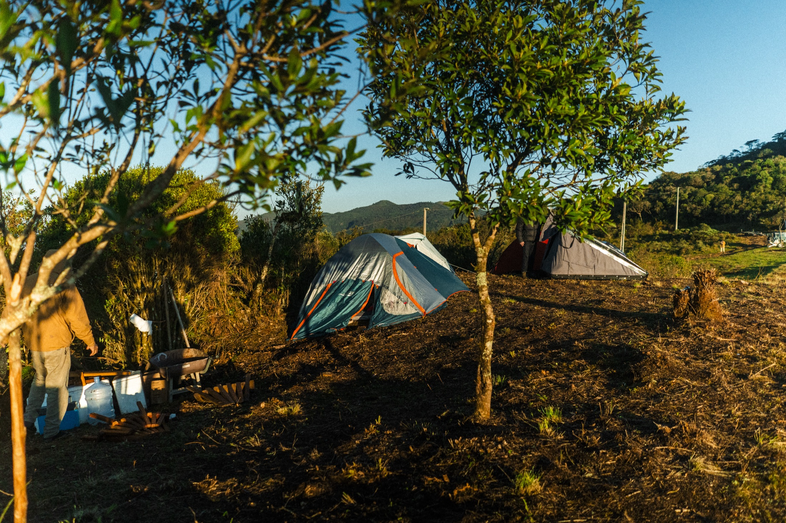
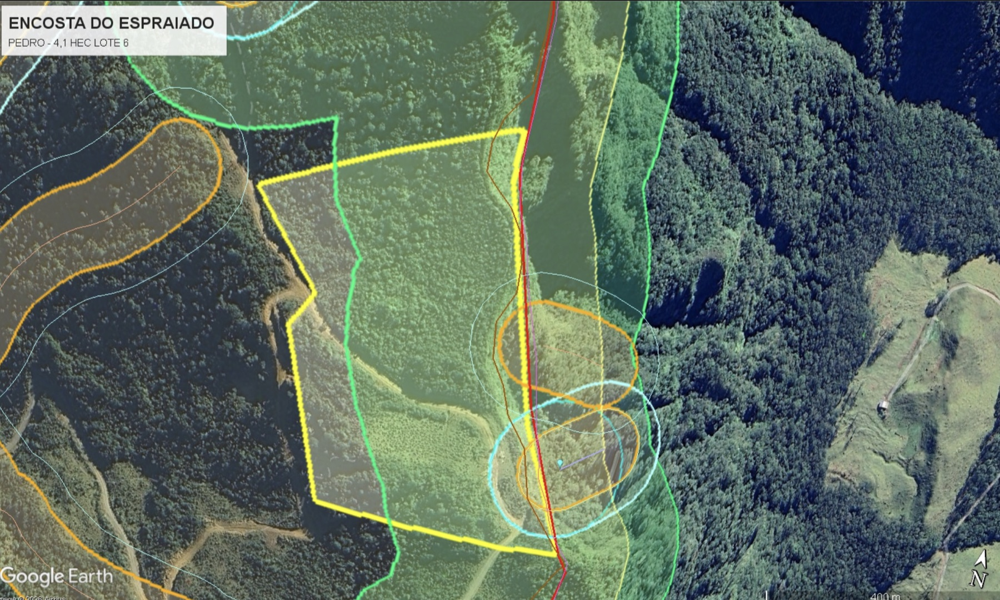
| Face | Elemento | Razão |
|---|---|---|
| Leste 8 m | Vidro DVH | A vista; sol da manhã |
| Oeste 8 m | Pedra + portal | Escudo de vento; chegada |
| Norte 5 m | Janela | Sol baixo de inverno |
| Sul 5 m | Parede de pedra | Barra vento pós-frontal |
- Cama no canto N — acorda com sol + vista.
- Fogão de massa central, dividindo cama/estar.
- Cobertura 1 água, baixo perfil, ancorada; beiral que não vira "asa".
Estrutura & segurança estrutural
Aço (primário) + madeira (envelope), fundado direto na rocha. O vento é a carga que manda.
Fundação na rocha
- Dreno de interceptação a montante antes de tudo.
- Plintos escalonados + chumbadores químicos. Nivelar por cima, não escavar.
- Ancoragem antivento na rocha sã — furar pedra ferro só aqui.
- Massa do fogão em fundação própria, nunca no aço.
Esqueleto
- Grelha e pilares de aço sobre crawlspace ventilado.
- Contraventamento — trava o racking lateral do vento.
- Aço galvanizado + pintura; ligação anti-corrosão com a madeira.
- Cobertura baixa, fixação reforçada telha→estrutura→ancoragem.
| Pré-dimensionamento · conservador | Valor | Base |
|---|---|---|
| Vento — Vk | 58,5 m/s | V0 45 × S1 1,30 · NBR 6123 confirmar |
| Pressão dinâmica | ~2,1 kN/m² | q = 0,613 · Vk² |
| Sucção no telhado (uplift) | ~170 kN | líquido majorado (γ 1,4) |
| Ancoragem | 8 × M20 | resina, ~200 mm em rocha sã → FS ≥ 2 fecha |
| Piso (sobrecarga) | ~2,7 kN/m² | NBR 6120 + permanente |
Mesmo sem licença, vento (NBR 6123 + fator do platô) e ancoragem exigem cálculo com ART + ensaio de arrancamento na rocha. É seguro de vida num topo que já provou 178 km/h. Este pré-dimensionamento mostra que fecha com folga; o número final é do calculista.
Envelope & conforto
O "delicioso" vem de aquecer superfícies, não o ar. 70% do conforto é envelope + estanqueidade; 30% a fonte.
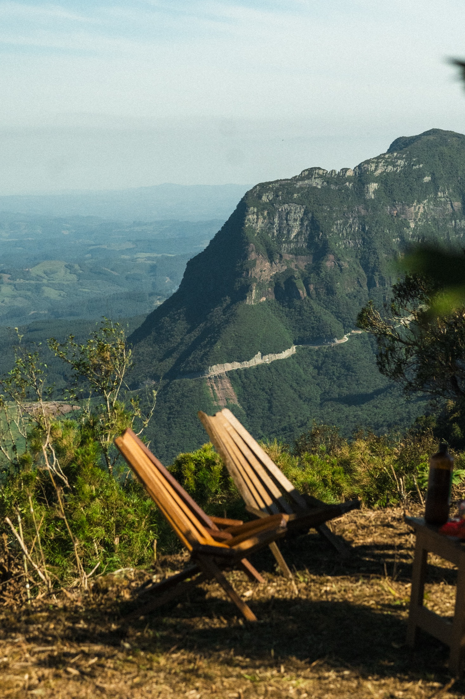
Com piso e paredes mornos, você fica confortável com o ar mais fresco — pés quentes, cabeça fresca, sem correntes. O maior investimento de conforto não é o fogão: é selar o ar e isolar.
| Elemento | Alvo (R / U) | Espessura aprox. |
|---|---|---|
| Paredes | R-38–45 · U ~0,15 | ~25–28 cm lã / ~30 cm fibra de madeira |
| Cobertura | R-60 · U ~0,08 | ~30 cm — capriche (maior perda) |
| Piso s/ pilotis | R-38–60 | isolar por baixo, protegido do vento |
| Vidro DVH | U ~1,3–1,6 | low-e + argônio + warm-edge |
| Estanqueidade | ≤ 1,0–1,5 ACH50 | blower-door durante a obra |
Ponte térmica
Isolar por fora do aço
O aço vaza calor. Camada rígida contínua externa rompe a ponte — crítico na estrutura híbrida.
Umidade
Vapor no lado quente
Barreira por dentro, permeável por fora (seca para fora). Ar selado corta o grosso do risco de mofo.
Vidro à noite
Cortina térmica
De dia, vista e sol; de noite o DVH vira radiador frio. Cortina vedada reduz perda 25–50%.
Ar de combustão dutado ao fogão + detector de CO (inegociável) + idealmente um HRV pequeno. A 1.450 m a tiragem puxa diferente — confirmar com o fabricante.
Aquecimento
Um fogão de massa de pedra ferro — coração refratário, corpo de pedra — que irradia a noite inteira e ainda aquece piso, parede e água.
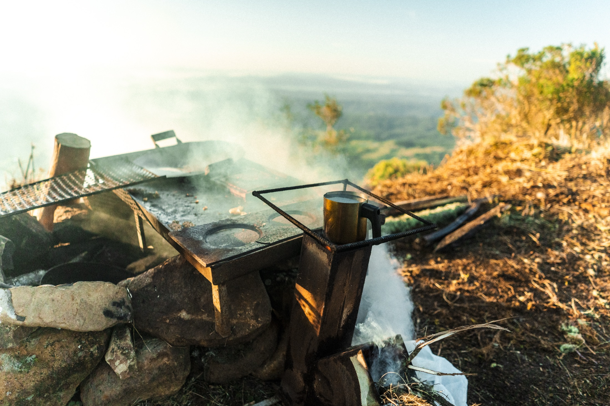
Você queima forte 1–2× por dia (~15–30 kg de lenha, 2–3 h); a massa engole o calor e irradia suave por 12–24 h. Combustão limpa (80–90%). Referência real no Sul: uma estufa russa de ~1 t aquece 90 m² a noite toda com 15 kg de lenha — a tua cabana tem menos da metade.
Fluxo hidrônico. Serpentina no núcleo do fogão → buffer → PEX. Solar entra embaixo do tanque (frio); lenha, em cima.
O fogão de pedra
Refratário + pedra ferro
A fornalha (800–1000 °C) é tijolo refratário — pedra crua racha. O corpo, banco e parede são pedra ferro (densa = guarda muito calor). Núcleo flutuante.
Piso & parede
Radiante seco em PEX
Placas de alumínio + PEX-a (leve, sem contrapiso — bom sobre pilotis). Baixa temperatura. Dutos de fumaça aquecem banco/parede sem bomba.
Solar térmico
Tubo evacuado + glicol
Ganha da placa plana no frio (~61% vs 46%). Circuito fechado a glicol (anticongelante); água de banho sempre dentro de casa.
Backup
Mini-split cold-climate
Seguro automático que segura a casa acima do congelamento quando o fogo apaga ou você viaja; refresca no verão. A massa é o coração.
Proporção
Massa certa, não a maior
Numa cabana super-isolada, o risco nº1 é superaquecer. Núcleo compacto; ~10–15 kW já sobra. "Absurdo" de beleza, não de tamanho.
Água quente
~150–200 L de AQS
Um kit de 15–20 tubos evacuados cobre banho de 1–2 pessoas com folga, no mesmo tanque.
A lenha não "desliga": se a bomba/energia cai, a água pode ferver. Obrigatório: tanque de inércia + válvula de descarga térmica (~95 °C) + loop de dissipação por gravidade + vaso de expansão + válvula de alívio 3 bar + bomba com bateria. Não é opcional.
Água
Urubici chove ~2.100 mm/ano bem distribuídos: o problema não é escassez — é geada e potabilização.
Se houver nascente acima da cota, ela é a fonte primária e a chuva o backup — zero energia.
| Balanço | Valor | Nota |
|---|---|---|
| Captação anual (50 m² · C 0,8) | ~84.000 L | ≈ 2× a demanda |
| Pior mês (abr) | ~4.800 L | vs ~3.900 L de consumo → superávit |
| Cisterna | 10.000 L | ~75 dias de autonomia total |
| Consumo (2 pessoas) | ~130 L/dia | frugal |
Geada é o inimigo
Enterrar resolve 90%
Reserva e tubos enterrados (30–50 cm) não congelam. Filtros e UV ficam dentro da cabana aquecida. Tanque elevado exposto racha — evitar.
Potável
Filtros + UV 254 nm
Mata 99,9% sem químico/sabor. Backup de cloro se faltar energia. Nascente também passa por UV + análise de coliformes.
Nascente = APP → verificar outorga antes de intervir; captação pequena (tubo + brita). Normas: NBR 15527 (chuva), NBR 10844 (calhas). Confirmar precipitação na estação INMET de São Joaquim.
Energia — off-grid solar
O fotovoltaico faz só eletricidade — o calor é lenha + solar térmico. A base que você já tem cobre o essencial; o que define o tamanho do sistema é a cozinha.
Teu sistema atual — 550 W de painel · 4×110 Ah chumbo-ácido em 24 V · inversor 2.000 W — é uma base real para o essencial. Mas a geração de um painel só (~1–1,4 kWh/dia no inverno) é o gargalo: com um painel, o banco vive descarregando. A decisão que dimensiona tudo é como você cozinha — elétrica multiplica o sistema por 3–4×; gás + lenha mantém enxuto. No inverno, a geladeira é o fiel da balança — e dois vilões silenciosos somem de graça: use o UV por fluxo (não 24 h) e desligue o valvulado fora das sessões (ele consome quase igual em standby).
| Base atual | Valor | Leitura |
|---|---|---|
| Geração (1×550 W) | ~1,5 kWh/dia | inverno dia limpo · cai com neblina · o gargalo |
| Armazenamento útil | ~2,6 kWh | chumbo-ácido a 50% DoD |
| Inversor | 2.000 W | senoidal pura (confirmar) p/ o valvulado |
| Cobre bem | ~1 dia frugal | luz, bombas, laptop, UV por fluxo, hi-fi |
| Não cobre | — | cozinha elétrica · mini-split contínuo |
| Auditoria de carga | Frugal | + cozinha + mini-split |
|---|---|---|
| Consumo/dia | ~2,5 kWh | ~7–9 kWh |
| Cozinha elétrica | — | indução ~1 kWh/hora; pico > 3 kW |
| Mini-split (backup) | — | ~2–4 kWh em dia frio |
Cozinhar por eletricidade é a maior carga off-grid — com o mini-split, triplica a 4× o sistema. Recomendação: gás (GLP) + o próprio fogão a lenha para cozinhar; elétrico só pontual (air fryer em dia de sol forte). Isso mantém o sistema pequeno e evita o salto para R$ 35–50 mil.
Baterias no frio
O ponto crítico a 1.450 m
LiFePO4 não pode CARREGAR abaixo de 0 °C (dano permanente). Solução: bateria dentro da cabana aquecida + BMS com corte por baixa temperatura (marca séria) + opção autoaquecida. Chumbo-ácido tolera carregar no frio, mas rende menos e dura poucos ciclos.
Inversor & tensão
48 V ao expandir
Onda senoidal pura é inegociável (o valvulado). Ficar em 24 V só no cenário frugal; ao adicionar cozinha/mini-split, migrar p/ inversor híbrido 48 V, 5–6 kW (menos corrente, cabos finos).
Montagem
Na rocha, ao Norte
Estrutura no solo/rocha (a retro ajuda), ~38° virada ao Norte — ângulo de inverno + a geada/neve escorrega. Fixação dimensionada ao vento. Não conte com geração em dia de neblina/neve.
| Expansão faseada | Escopo | R$ · estimativa |
|---|---|---|
| A — Frugal confiável | +2–3 painéis (~1,6–2,2 kWp) + MPPT maior; mantém 24 V | ~2.500–4.500 |
| B — + cozinha pontual | migrar 48 V: híbrido 5 kW + ~10 kWh LiFePO4 + painéis | ~25.000–30.000 |
| C — cozinha cheia + mini-split | 5–6 kWp + 15–20 kWh LiFePO4 + inversor 6 kW | ~35.000–50.000 |
Integração
- PV → só eletricidade; solar térmico → água/calor; lenha → ambiente. Separados.
- Dump do excedente de PV numa resistência do tanque de inércia = água quente de graça em dia claro.
- Gerador inverter 2–3 kW como seguro contra as sequências de neblina do planalto (recarrega o banco, não alimenta a casa direto).
Medir antes (custo zero)
- Confirmar que o inversor é senoidal pura.
- Puxar o HSP exato do sítio no CRESESB/SunData com o GPS.
- Decidir a cozinha primeiro — é ela que define o tamanho de tudo.
Custos ESTIMATIVA (varejo 2025); kit fechado costuma sair melhor que peça a peça. HSP e o microclima de neblina (Morro da Igreja) a confirmar no local.
Esgoto ecológico — descarga zero
Três restrições do sítio convergem para uma só resposta: rocha (não dá pra escavar fossa), geada (mata planta tropical) e nascente/APP (não pode infiltrar) → separar as correntes.
Com as águas negras resolvidas a seco e as cinzas num leito contido acima da rocha, o sítio opera em descarga zero: nada infiltra na pedra, nada chega à nascente. É a solução mais limpa — e a única que satisfaz as três restrições ao mesmo tempo.
| Águas negras — opção | Na rocha / perto da APP | Veredito |
|---|---|---|
| Sanitário de compostagem (separação de urina) | 100% em superfície · zero água · zero infiltração | recomendado |
| Biodigestor | tanque enterrado + efluente líquido a destinar | descartado |
| Fossa séptica + sumidouro | exige escavar rocha + infiltrar (proibido perto de APP) | descartado |
Águas negras
Sanitário de compostagem
O separador desvia a urina (fertilizante — diluir 1:10, fora da APP); as fezes caem em câmara e são cobertas com serragem a cada uso. Sem mistura = quase sem odor.
No frio: câmara isolada, dentro da parte aquecida; no inverno vira "banheiro seco" (a compostagem pausa e termina no calor). Esvaziar a bombona de urina antes de geada forte (congela e racha). Composto curado 6–12 meses → só árvores/ornamentais, nunca hortaliça crua.
Águas cinzas
Wetland contido acima da rocha
Leito impermeabilizado com manta (sobre areia, protegendo a rocha), brita + substrato + plantas, em fluxo subsuperficial (resiste à geada). Nada escavado — bacia elevada/contida (a retro + a pedra local ajudam). Dimensionar ≥ 2 m²/pessoa (o frio derruba a eficiência). Água tratada → reúso em irrigação longe da APP.
Plantas resistentes à geada
- Taboa, papiro, junco — macrófitas rústicas de brejo.
- Copo-de-leite — gosta de frio e de meio encharcado.
- Biri (cana-da-índia), íris-da-água — ornamentais rústicas.
- Nunca bananeira (morre na geada); evitar lírio-do-brejo (invasora — arriscado perto de APP).
Locação (legal)
- Fora do raio de 50 m da nascente (APP · Código Florestal).
- ≥ 15 m de qualquer corpo d'água (NBR 7229).
- Sempre a jusante, nunca a montante da captação de água.
Base: NBR 7229 e 13969 — substituídas pela NBR 17076:2024 (confirmar o texto vigente e o que a Prefeitura/órgão ambiental de SC exige). BET/wetland não têm norma ABNT dedicada. Custos ESTIMATIVA: sanitário de compostagem ~R$ 1,5–3 mil; o wetland é dominado por manta + brita, barateado pela retro + pedra local — cotar na serra.
Materiais & custo-benefício
O caro nesses sistemas é mão de obra + transporte — e você tem pedra, lenha, a retro e as próprias mãos. Faixas ESTIMATIVA, cotar localmente.
| Sistema | Especificação | Faixa (R$) · estimativa |
|---|---|---|
| Fogão de massa | núcleo refratário + corpo de pedra ferro | núcleo ~5k+ · pedra/MO própria |
| Piso radiante seco | PEX-a + placas alumínio + MO | ~12.000 (40 m²) |
| Tanque de inércia + segurança | buffer 300–500 L, válvulas, bomba | cotar (integrador) |
| Solar térmico | tubo evacuado 200 L | ~3.500–5.000 |
| Água (cisterna + tratamento) | enterrada + filtros + UV, por gravidade | ~6.000–20.000 |
| Mini-split cold-climate | backup + verão | cotar |
1º Estanqueidade ao ar → 2º envelope (cobertura → piso → paredes) → 3º fonte + backup → 4º janelas + cortina noturna. Investir na fonte antes do envelope é o erro clássico.
Execução — sequência de obra
A ordem no canteiro. A retro paga a si mesma em acesso, dreno, cisterna e contenção de pedra.
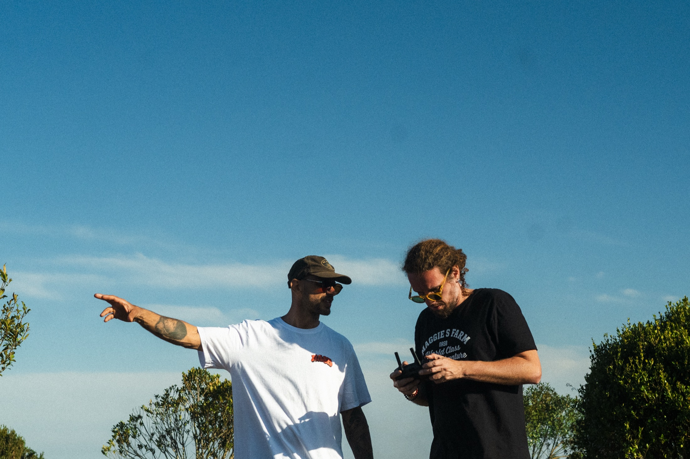
Dados que a estrutura exige
Topografia (curvas 1 m), sondagem/estabilidade de talude, rocha sã × alterada, cargas (vento governa). Confirmar nascente e cota.
Fundação na rocha
Dreno de interceptação → raspar grama → plintos + chumbadores → ancoragem antivento. Cisterna enterrada (retro).
Esqueleto
Grelha e pilares de aço + contraventamento + cobertura ancorada + madeira secundária + proteção do aço.
Fechar água & vento
Envelope de madeira super-isolado + telhado + estanqueidade (blower-door) + DVH. Vapor no lado quente.
Pedra & calor
Pele de pedra ferro descolada + massa/fogão em fundação própria + hidrônico (buffer, PEX, solar, segurança).
Autonomia & comissionamento
PV off-grid + água (filtros/UV) + esgoto ecológico. Testar aquecimento, blower-door e a drenagem numa chuva real.
Segurança — os inegociáveis
O que transforma "incrível" em "incrível e seguro". Cada item tem custo real de vida ou de obra.
Estrutura & fogo
- Cálculo de vento (NBR 6123) e ancoragem, com ART.
- Ensaio de arrancamento na pedra ferro real.
- Caldeira: heat-dump por gravidade + descarga térmica + alívio.
- Detector de CO + ar de combustão dutado; núcleo refratário.
Sítio & água
- Recuo da lip (estabilidade de borda + APP).
- Dreno de interceptação a montante — rocha não perdoa.
- UV + análise de coliformes antes de considerar potável.
- Estanqueidade testada (blower-door) — conforto e sem mofo.
Este guia dá o método, a direção e o pré-dimensionamento que fecham com folga. O fechamento com ART, ensaios e topografia real é o cadeado que transforma os números num projeto certificado seguro. O melhor engenheiro confere, testa e assina — não confia só no próprio traço.
Cultivo & criação
O frio de altitude é o maior ativo agrícola do lote — viabiliza as melhores frutas temperadas do Brasil. Nos animais, uma pergunta decide tudo: você estará lá quase todo dia?
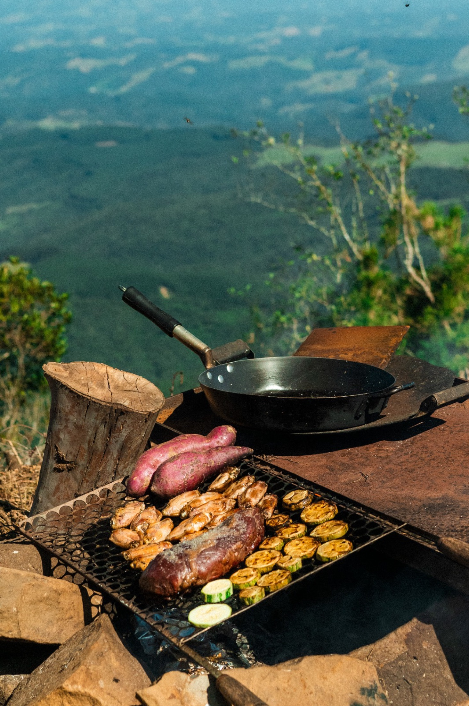
A 1.450 m, com 1.000–1.400 horas de frio, a vocação é clara: pomar temperado, frutas vermelhas, uva de altitude e hortaliça de frio — o que São Joaquim/Urubici fazem melhor que qualquer lugar. Regra ambiental que atravessa tudo: usar só a área já aberta, plantar em nível na encosta, e nunca desmatar nativa (Mata Atlântica/APP).
Cultivo — em camadas
Estufa
O coração no frio
Folhas o ano todo (alface, couve, rúcula, espinafre) + tomate/pimentão/pepino no verão. Anti-geada sem energia: tambores d'água pretos (inércia) + parede de pedra ao N; vedação rigorosa. Gotejamento com timer p/ ausências.
Horta a céu aberto
Culturas de frio
Brássicas (couve, brócolis, repolho), raízes (cenoura, beterraba, nabo, batata), alho e cebola (a serra é referência nacional), ervilha, fava, folhas rústicas. Pequena e perto da casa.
Pomar — a vocação
Maior retorno, menor esforço
Maçã (2+ variedades p/ polinizar), ameixa, pêssego, pera, caqui, figo + frutas vermelhas (mirtilo, framboesa, morango). Mudas enxertadas, tutoramento firme (vento), mulch. Estabelecido, quase se cuida sozinho.
Perenes & nativas
Que se cuidam sozinhas
Pinhão/araucária, feijoa (goiabeira-serrana) como quebra-vento comestível, butiá, guabiroba, uvaia. Adubação verde (aveia + ervilhaca) no inverno. Agrofloresta simples em camadas.
Esqueça tropical a céu aberto (cítrico, banana, abacate, café). E jamais plante pínus ou amora silvestre — invasoras ilegais que destroem os campos de altitude. Prefira sempre nativas para quebra-vento e cerca viva.
Criação — a presença decide tudo
Bicho não entende de calendário: quase todos precisam de cuidado diário. Num refúgio de uso parcial sem caseiro, a resposta honesta é começar pelas abelhas — a única criação séria compatível com semanas de ausência.
| Animal | Frio | Aguenta ausência? | Veredito |
|---|---|---|---|
| Abelhas (mel) | alta | sim · revisões sazonais | comece por aqui |
| Ovelhas rústicas (crioula / corriedale) | muito alta | parcial · pasto + água natural + LGD | o + fácil dos mamíferos, com rondas |
| Galinhas rústicas | média-alta | não · água congela, ovos se perdem | ótimas só com presença/caseiro |
| Cavalo crioulo | muito alta | parcial, mas risco (cólica) | âncora de custo e responsa |
| Cabras · patos · codornas | média/baixa | não | pular neste cenário |
Se/quando tiver ovelhas
- Raças rústicas: crioula lanada / corriedale (o frio valoriza o cordeiro serrano).
- Água natural (nascente/açude) que não vira bloco de gelo — o truque da ausência.
- Abrigo quebra-vento no sotavento; cerca boa (custo real em rocha); parição na primavera.
- Lotação baixa (~1 animal/ha) — encosta rochosa não superlota (erosão + lei).
Teus Malinois ≠ guardião de rebanho
- Malinois é pastoreio/proteção — excelente com você presente (alarme, dissuasão), mas não se auto-vincula ao rebanho.
- Guardião autônomo de ovelha = LGD (Maremano, Pyrenees), criado desde filhote no rebanho.
- Atenção ao drive de perseguição do Malinois com ovelha/galinha no início.
Você terá alguém no sítio quase todo dia? Se não: fique nas abelhas e adie o rebanho. Todo o romantismo das ovelhas na encosta desaba no primeiro balde d'água congelado numa manhã de −8 °C sem ninguém para trocá-lo. E nunca desmatar nativa para pasto — usar o campo já existente (Mata Atlântica/APP; fazer o CAR e consultar EPAGRI/IMA-SC).
Segurança & vigilância
Sítio remoto de uso parcial pede segurança em camadas de baixo consumo — não uma central sempre-ligada puxando o banco solar. E o gargalo real é o sinal de celular no promontório.
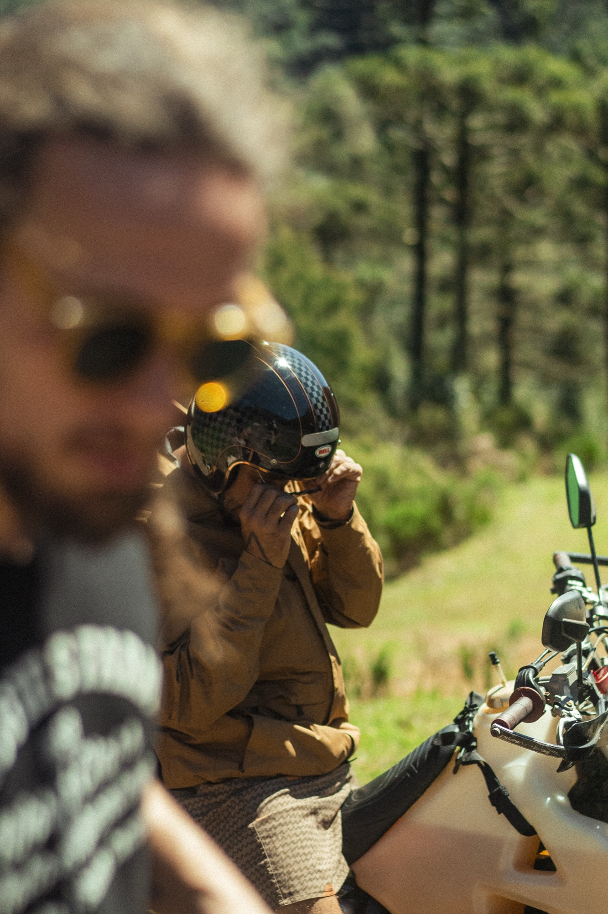
A ordem muda quando a resposta humana demora: Dissuadir → Detectar → Registrar (evidência) → Notificar. Registrar vem antes de notificar — com a casa sozinha, a evidência local garantida vale mais que um alerta que pode não chegar. E tua camada mais forte e barata já existe: os 4 Malinois.
Câmeras
Solar + 4G, autônomas
Placa + bateria próprias (não pesam no banco da casa), chip 4G, gravação em cartão SD local (evidência mesmo offline), IA de pessoa (menos alarme falso de bicho). Intelbras (suporte nacional, kit rural) ou Reolink Go (qualidade, mas importada e cara).
Frio — atenção
No limite dos −10 °C
A maioria opera até −10 °C e pode não gravar abaixo disso — Urubici raramente fura −10 °C, então fica no limite. Montar sob beiral (geada na lente), superdimensionar painel/bateria (lítio carrega mal no frio) e confirmar a faixa de temperatura de qualquer modelo.
O sítio já tem ~700 Mbps chegando (Wi-Fi/link de rádio). Some o gargalo: câmeras online com monitoramento remoto real, sem depender de 4G e sem Starlink. Basta um roteador pequeno (~5–10 W). Mantenha a gravação local (SD) como rede de segurança se o link cair em temporal.
Conectividade (~700 Mbps no sítio)
- Internet já chega (~700 Mbps, Wi-Fi/rádio) → câmeras online, alertas em tempo real. Só um roteador pequeno (~5–10 W).
- Sem Starlink — evita o vilão de energia (~45–100 W) que seria necessário sem internet local.
- Gravação local (SD) sempre como rede de segurança: se o link de rádio cair no temporal, o registro fica garantido offline.
Detecção & alarme (dorme até o evento)
- Sensores PIR de movimento + de abertura (porta/janela), sem fio, a pilha.
- Sirene 12 V local — dissuade e acorda os cães.
- Holofotes solares com PIR — micro-solar próprio, zero impacto no banco.
Camada 1 — dissuadir
Os cães + o acesso
Os 4 Malinois são a proteção mais eficaz e barata (presença, ruído, resposta) + portão/cerca na estrada, placas e iluminação. Mas: quem cuida deles quando a casa fica sozinha? Sem isso, a camada nº1 evapora.
A construção ajuda
Pedra = difícil arrombar
A casa de pedra trabalha a teu favor; concentre a proteção nos pontos fracos — portas e janelas (fechaduras reforçadas, venezianas/vidro resistente).
Energia
Cada olho no seu micro-solar
Câmeras e holofotes solares = ~zero impacto no banco. Nada de central sempre-ligada; tudo "dorme até haver evento". Starlink só sob demanda.
| Item | R$ · estimativa | Obs |
|---|---|---|
| Câmera solar-4G genérica | 299–577 cada | "olho extra" descartável |
| Reolink Go Ultra 4K solar+4G | ~2.700–3.200 | importada, cara; comparar ML |
| Intelbras kit rural solar+4G | cotar | suporte nacional |
| Holofote solar c/ PIR | 100–300 | micro-solar próprio |
| Sensores PIR/abertura · sirene 12 V | 50–250 | consumo desprezível |
| Starlink Mini (kit · mês) | ~500–800 · 189 | sob demanda |
(1) Sinal 4G real no promontório — testar no local; (2) faixa de temperatura de cada câmera vs. as mínimas de inverno (perto de −10 °C); (3) quem cuida dos cães quando a casa fica sozinha — sem isso, a camada nº1 desaparece. Custos ESTIMATIVA; cotar Intelbras + roteador 4G.